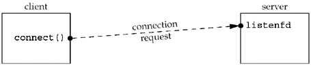
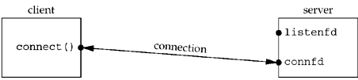
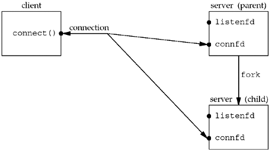
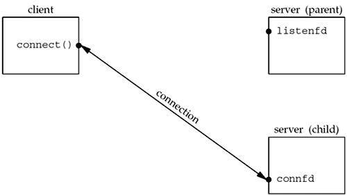

| [ Team LiB ] |
|
4.8 Concurrent ServersThe server in Figure 4.11 is an iterative server. For something as simple as a daytime server, this is fine. But when a client request can take longer to service, we do not want to tie up a single server with one client; we want to handle multiple clients at the same time. The simplest way to write a concurrent server under Unix is to fork a child process to handle each client. Figure 4.13 shows the outline for a typical concurrent server. Figure 4.13 Outline for typical concurrent server.
pid_t pid;
int listenfd, connfd;
listenfd = Socket( ... );
/* fill in sockaddr_in{} with server's well-known port */
Bind(listenfd, ... );
Listen(listenfd, LISTENQ);
for ( ; ; ) {
connfd = Accept (listenfd, ... ); /* probably blocks */
if( (pid = Fork()) == 0) {
Close(listenfd); /* child closes listening socket */
doit(connfd); /* process the request */
Close(connfd); /* done with this client */
exit(0); /* child terminates */
}
Close(connfd); /* parent closes connected socket */
}
When a connection is established, accept returns, the server calls fork, and the child process services the client (on connfd, the connected socket) and the parent process waits for another connection (on listenfd, the listening socket). The parent closes the connected socket since the child handles the new client. In Figure 4.13, we assume that the function doit does whatever is required to service the client. When this function returns, we explicitly close the connected socket in the child. This is not required since the next statement calls exit, and part of process termination is to close all open descriptors by the kernel. Whether to include this explicit call to close or not is a matter of personal programming taste. We said in Section 2.6 that calling close on a TCP socket causes a FIN to be sent, followed by the normal TCP connection termination sequence. Why doesn't the close of connfd in Figure 4.13 by the parent terminate its connection with the client? To understand what's happening, we must understand that every file or socket has a reference count. The reference count is maintained in the file table entry (pp. 57–60 of APUE). This is a count of the number of descriptors that are currently open that refer to this file or socket. In Figure 4.13, after socket returns, the file table entry associated with listenfd has a reference count of 1. After accept returns, the file table entry associated with connfd has a reference count of 1. But, after fork returns, both descriptors are shared (i.e., duplicated) between the parent and child, so the file table entries associated with both sockets now have a reference count of 2. Therefore, when the parent closes connfd, it just decrements the reference count from 2 to 1 and that is all. The actual cleanup and de-allocation of the socket does not happen until the reference count reaches 0. This will occur at some time later when the child closes connfd. We can also visualize the sockets and connection that occur in Figure 4.13 as follows. First, Figure 4.14 shows the status of the client and server while the server is blocked in the call to accept and the connection request arrives from the client. Figure 4.14. Status of client/server before call to accept returns. Immediately after accept returns, we have the scenario shown in Figure 4.15. The connection is accepted by the kernel and a new socket, connfd, is created. This is a connected socket and data can now be read and written across the connection. Figure 4.15. Status of client/server after return from accept. The next step in the concurrent server is to call fork. Figure 4.16 shows the status after fork returns. Figure 4.16. Status of client/server after fork returns. Notice that both descriptors, listenfd and connfd, are shared (duplicated) between the parent and child. The next step is for the parent to close the connected socket and the child to close the listening socket. This is shown in Figure 4.17. Figure 4.17. Status of client/server after parent and child close appropriate sockets. This is the desired final state of the sockets. The child is handling the connection with the client and the parent can call accept again on the listening socket, to handle the next client connection. |
| [ Team LiB ] |
|